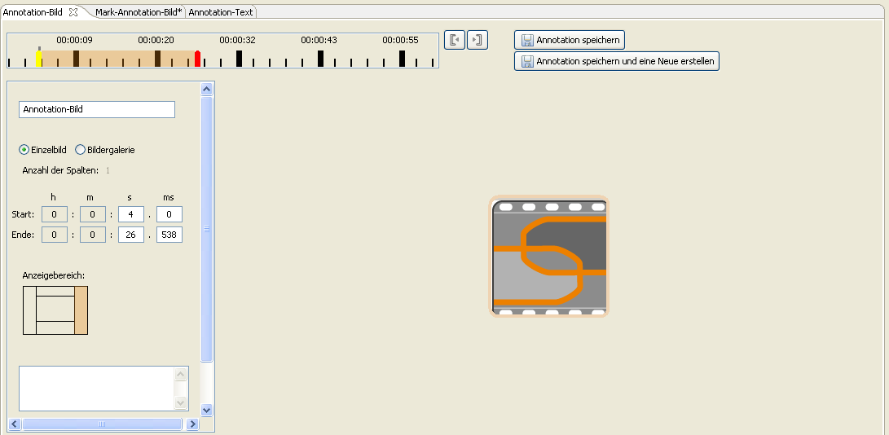

Erstellen von Annotationen
Der SIVA Producer unterstützt das Erstellen verschiedener Annotationstypen. Dies sind
Richtext, Text, Bild, Video und Audio.
Eine Annotation besteht immer aus einem Inhalt, einer Dauer und einem Namen. Je nach Art
der Annotation kann der Inhalt im Programm verändert werden. Der Name der Annotation kann
durch den Benutzer angegeben werden. Wird kein Name eingegeben, wird diesr automatisch vom
Programm vergeben. Bei jeder Annotation müssen Start- und Endzeitpunkt festgelegt werden.
Dies kann auf verschiedene Arten erfolgen:
- Eingabe von Start- und Endzeit in die entsprechenden Felder
- Verschieben des Start- und Endzeitpunktes auf der Zeitleiste
- Festlegen durch Klicks auf die Zeitleiste: Zum Festlegen des Startzeitpunktes wird
der Mauszeiger auf dem gewünschten Zeitpunkt auf der Zeitleiste positioniert und mit der
linken Maustaste geklickt. Das Festlegen des Endzeitpunktes wird auf die gleiche Art und
Weise durchgeführt, nur wird hier mit der rechen Maustaste geklickt.
Außerdem kann die Position geändert werden, an der die Annotation angezeigt werden soll.
Dies kann in einem der Randbereiche oder in einem eigenen Fenster sein. TODO: genau beschreiben
wenn fertig.
Sind alle Einstellungen vorgenommen, wird die Annotation durch einen Klick auf den
Speichern-Button gespeichert. Dann wird die Annotation im Zeitleistenbereich des oberen
Fensters angezeigt.

Inhalt